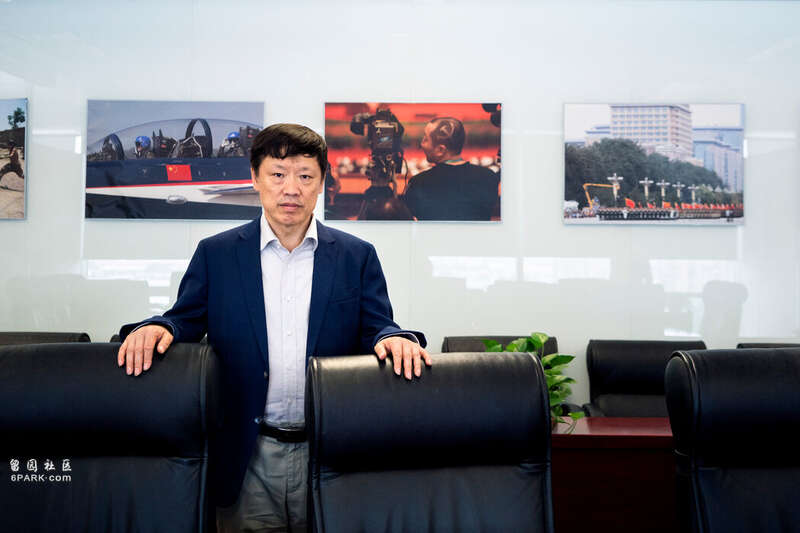

胡锡进，2019年摄于北京。Giulia Marchi for The New York Times
中国社交媒体上最有影响力、最多言的民族主义声音之一突然沉寂下来，中国的互联网正在猜测原因。
胡锡进曾任咄咄逼人的共产党报纸《环球时报》的主编，定期在社交媒体平台新浪微博撰写文章、发布视频，他在微博上拥有近2500万名关注者。但在7月下旬，胡锡进停止更新页面，这让读者感到困惑，也让一些批评他的人感到欣慰。
胡锡进没有就此做出解释；中国的互联网当局也没有说原因。但在中国，许多人认为他受到了审查，他们指出，有迹象表明，共产党官员可能被惹恼了，矛盾的是，这是因为胡锡进以错误的方式赞扬了他们。在中国，即使对共产党不当的赞美也足以引发审查者的愤怒。
胡锡进7月的一条微博可能是他麻烦的源头，这条微博称赞关于经济战略的党内会议取得了“历史性的”成果。胡锡进认为，党在经济计划中所使用的措辞暗示，中国将降低国有企业的地位，大力支持民营企业。
该计划为民营企业和国有企业“真正的平等”打开了道路，拥有数千万读者的胡锡进写道。“就在不是很久以前，有人公开唱衰民营经济，”他写道。“那些声音今天看起来是多么可笑。”
胡锡进的帖子很快就从微博上消失了，但引发了一场轩然大波。
民营企业带来至关重要的就业和税收，在中国政府急于恢复它们的信心之际，胡锡进的赞扬似乎有助于政策制定者。但他遭到了极左批评者的攻击，他们指责他歪曲党的言论，破坏了中国对国有企业的承诺。中国极左网站乌托邦转载了一条评论：“这是他反党、反社会主义公有制的根本思想的大暴露。”
“似乎确实有人对他的帖子不满，”中国传媒研究计划的主编何松涛(Ryan Ho Kilpatrick)在接受采访时说，该项目也在监测互联网审查和争议。“有时候，他以错误的方式支持党，做得太过分了，就会说错话。”
这场争议至少表明，即使是中国政府的支持者，在试图解释其决策时也可能陷入陷阱。中共一直在努力重振私营部门，同时保持国有企业作为党的权力支柱地位，这种微妙的平衡可能会让人对中国领导人习近平的优先事项产生困惑。
上海的金融区。Alex Plavevski/EPA, via Shutterstock
《人民日报》发表了一篇评论，捍卫党对国有部门的承诺，“只要坚持公有制为主体，”评论说，中国就可以在加强社会主义经济制度的同时让私营企业蓬勃发展。文中没有提到胡锡进的名字，但在文章发表之后，关于胡锡进越界的猜测越来越多。
“主体”一词之所以引人注目，是因为胡锡进在他现已删除的帖子中指出，与2013年的类似计划不同，这一次，党的经济计划没有明确将国有部门称为“主体”。同样值得注意的是，《人民日报》的评论以笔名“仲音”发表，是“重要的声音”的谐音，表明这是高层的回应。
胡锡进可能过分解读了中共领导人的计划。这一次，党在非公有制经济和公有制经济问题上的措辞与习近平2022年对党的领导人发表的讲话并无太大区别，当时他在讲话中也没有明确将公有制经济称为“主体”。
“胡锡进的言论在我看来没有多大意义，”华盛顿彼得森国际经济研究所研究中国非公有制经济的研究员黄天磊在通过电子邮件回答问题时写道。“与2013年相比，在自力更生、国家安全和国家控制的重要性日益上升的背景下，以市场为导向的改革对领导层来说并不是优先事项。”
胡锡进没有回复《纽约时报》的信息。他告诉香港的《星岛日报》：“您看网上的东西就行了，请理解。”彭博新闻社援引一位不愿透露姓名的消息人士的话，称胡锡进已被禁止在网上发帖。
胡锡进于2021年从主编职位上退休，现在他的政治触角可能没有那么可靠了。2022年，他写道，中国空军应该拦截时任美国众议院议长南希·佩洛西前往台湾的飞机，结果引起了轩然大波。北京称她的台湾之行侵犯了中国对台湾的主权。在佩洛西安全降落台北后，中国民族主义者对胡锡进进行了辱骂。
“退休人员无法接触到某些文件，也不会与高层官员频繁互动，”香港中文大学研究中国互联网的助理教授方可成在谈到胡锡进最近对经济的评论时说。“他可能因此误判了形势。”